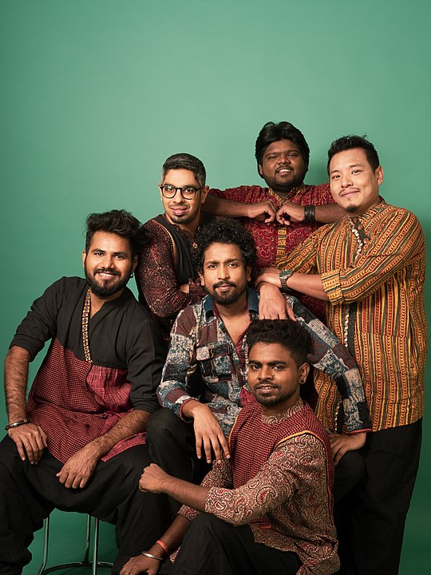

Kabir Café or Neeraj Arya's Kabir Café is an Indian indie-folk and folk-fusion music band based in Mumbai. Originated in 2013, it consists of Neeraj Arya, founder and Mukund Ramaswamy, co-founder of the band along with other artists. Neeraj Arya, the founder of the group and a self-taught artist started his music career as a solo-artist in early  2000s. Influenced by his guru Prahlad Singh Tipaniya, Neeraj Arya was introduced to the 15th century's saint Kabir and started playing folk melodies of Kabir's dohas and Samji's. In 2012, performing on the streets of Mumbai as part of the non-profit organisation, Natural Streets for Performing Arts (NSPA), Arya met violinist Mukund Ramaswamy, who is a Carnatic Violinist, and the two started performing as a duo. The band members always refer to Saint Kabir as the first member because the songs are based on the teachings and philosophy of Kabir .
By the time, more artists joined the group and in late 2013 the group represented itself as Kabir Café. The band has released three albums, their debut 'Panchrang' in 2016; their second live album 'Kabir Café Live' in 2018 and third album 'SABR' in 2022. The band is empanelled with ICCR. Since its formation, the band has performed over 800 concerts across India and abroad. Till 2021, they have performed in 11 countries. The Panchrang song Mann Lagyo Mero Yaar Fakiri Mein was featured in 2017 Indian comedy-drama film Hindi Medium as 'Fakiri'. Hoshiyar Rehna Nagar Mein Chor Aavega was featured in the film Baadshaho. Matkar Maya Ko Ahankar song from the same album and Kya Leke Aaya Jagat Mein were featured in Hindi-language crime drama web-series Scam 1992: The Harshad Mehta Story.